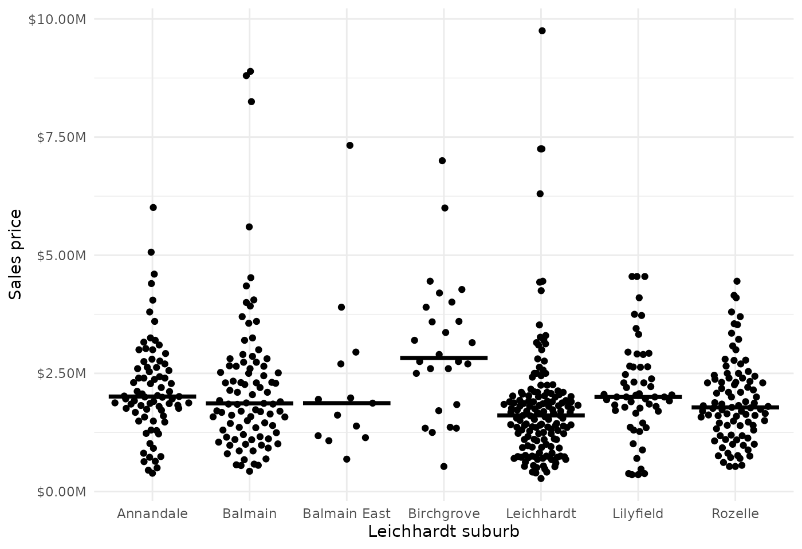

median_price_Leichhardt.RmdWe load necessary non-base R libraries.
Download 2021 past sales data for all Leichhardt suburbs. We use the internal dataset divisions_NSW to create a character vector of all suburbs within the SA3 Leichhardt area.
# Get all Leichhardt suburbs
suburbs <- divisions_NSW %>%
filter(sa3_name_2016 == "Leichhardt") %>%
unite(suburb, division, state, sep = ", ") %>%
pull(suburb)
suburbs
#> [1] "Annandale, NSW" "Balmain, NSW" "Balmain East, NSW"
#> [4] "Birchgrove, NSW" "Leichhardt, NSW" "Lilyfield, NSW"
#> [7] "Rozelle, NSW"
# Get data for Leichhardt suburbs
years <- 2021L
data <- get_past_sales_data(suburbs, years)
#> [2022-09-13 06:31:44] Looking up division ID for suburb='Annandale, NSW'...
#> [2022-09-13 06:31:44] URL: https://www.allhomes.com.au/svc/locality/searchallbyname?st=NSW&n=annandale
#> [2022-09-13 06:31:45] Finding data for ID=7476, year=2021...
#> [2022-09-13 06:31:45] URL: https://www.allhomes.com.au/ah/research/_/120747612/sale-history?year=2021
#> [2022-09-13 06:31:47] Found 84 entries.
#> [2022-09-13 06:31:47] Looking up division ID for suburb='Balmain, NSW'...
#> [2022-09-13 06:31:47] URL: https://www.allhomes.com.au/svc/locality/searchallbyname?st=NSW&n=balmain
#> [2022-09-13 06:31:47] Finding data for ID=7857, year=2021...
#> [2022-09-13 06:31:47] URL: https://www.allhomes.com.au/ah/research/_/120785712/sale-history?year=2021
#> [2022-09-13 06:31:48] Found 92 entries.
#> [2022-09-13 06:31:48] Looking up division ID for suburb='Balmain East, NSW'...
#> [2022-09-13 06:31:48] URL: https://www.allhomes.com.au/svc/locality/searchallbyname?st=NSW&n=balmain-east
#> [2022-09-13 06:31:48] Finding data for ID=8706, year=2021...
#> [2022-09-13 06:31:48] URL: https://www.allhomes.com.au/ah/research/_/120870612/sale-history?year=2021
#> [2022-09-13 06:31:49] Found 14 entries.
#> [2022-09-13 06:31:49] Looking up division ID for suburb='Birchgrove, NSW'...
#> [2022-09-13 06:31:49] URL: https://www.allhomes.com.au/svc/locality/searchallbyname?st=NSW&n=birchgrove
#> [2022-09-13 06:31:49] Finding data for ID=8355, year=2021...
#> [2022-09-13 06:31:49] URL: https://www.allhomes.com.au/ah/research/_/120835512/sale-history?year=2021
#> [2022-09-13 06:31:49] Found 26 entries.
#> [2022-09-13 06:31:49] Looking up division ID for suburb='Leichhardt, NSW'...
#> [2022-09-13 06:31:49] URL: https://www.allhomes.com.au/svc/locality/searchallbyname?st=NSW&n=leichhardt
#> [2022-09-13 06:31:50] Finding data for ID=8320, year=2021...
#> [2022-09-13 06:31:50] URL: https://www.allhomes.com.au/ah/research/_/120832012/sale-history?year=2021
#> [2022-09-13 06:31:51] Found 157 entries.
#> [2022-09-13 06:31:51] Looking up division ID for suburb='Lilyfield, NSW'...
#> [2022-09-13 06:31:51] URL: https://www.allhomes.com.au/svc/locality/searchallbyname?st=NSW&n=lilyfield
#> [2022-09-13 06:31:51] Finding data for ID=8748, year=2021...
#> [2022-09-13 06:31:51] URL: https://www.allhomes.com.au/ah/research/_/120874812/sale-history?year=2021
#> [2022-09-13 06:31:52] Found 61 entries.
#> [2022-09-13 06:31:52] Looking up division ID for suburb='Rozelle, NSW'...
#> [2022-09-13 06:31:52] URL: https://www.allhomes.com.au/svc/locality/searchallbyname?st=NSW&n=rozelle
#> [2022-09-13 06:31:52] Finding data for ID=7500, year=2021...
#> [2022-09-13 06:31:52] URL: https://www.allhomes.com.au/ah/research/_/120750012/sale-history?year=2021
#> [2022-09-13 06:31:53] Found 99 entries.We show the distribution and median value of sale prices of properties across different suburbs in the Sydney Leichhardt area in 2021.
# Plot
data %>%
filter(!is.na(price), price > 1e3) %>%
ggplot(aes(division, price)) +
geom_quasirandom() +
stat_summary(fun = median, geom = "crossbar", lwd = 0.5) +
scale_y_continuous(
labels = scales::label_dollar(scale = 1e-6, suffix = "M")) +
labs(x = "Leichhardt suburb", y = "Sales price") +
theme_minimal()